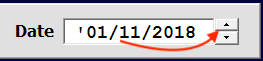
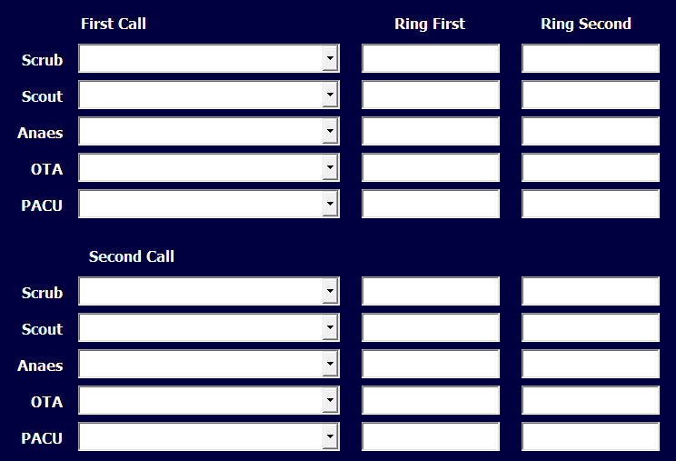

The On-Call Form¶
The main On-Call form drives filling out the CallSheet worksheet quickly and efficiently. The Help button on the form (“OCHelp”) will bring up this page directly.
Name-Order Toggle and Date¶
In the grey bar at the top of this form are two controls: the name-order toggle and the date field. The name-order toggle (“NameOrder”):
allows the user to search by first (given) names instead of the surname. For those of us who don’t know everyone’s surname, this option was introduced so that the name fields could display names in “GivenName Surname” format if desired, instead of the default “Surname, GivenName” (which is how they are entered and sorted in the NamesPhones worksheet).
Be sure to decide whether you want names displaying first name first or last name first (the default) before you start entering names. This toggle will become disabled when name selection has begun, and the only way to re-enable this toggle is by clearing all the fields.
At the top-right is the date field (“TodayDate”). The current date displays when the form is opened: however, if, say, the user wishes to fill out the call sheets in advance for the weekend, the date can be changed by simply typing in the desired dates or using the date-scroll arrows:
to advance the date.
Names and Phone Numbers¶
This section has three columns and two main sections: first and second call:
The dropdowns (collectively called “StaffName”) should hold only names of staff that work in that capacity. So, an OTA’s name should never appear in the Scrub dropdown. However, some individuals perform a number of roles, and therefore will appear in more than one dropdown.
The dropdowns can be used a number of ways: they can be opened with the arrow on the right side and the user can scroll down the list until she finds the name she’s after. However, it is infinitely faster to simply type a portion of the name, then press <TAB>.
The dropdown uses a form of predictive text. After choosing the name-order, with each letter the user types, the dropdown tries to autofill the field with a name. When the correct name appears, the user simply presses <TAB> on the keyboard to move to the next dropdown. If the name is not on the “NamesPhones” worksheet or, for some reason, not in the dropdown list, further typing will cease producing autofill text. Keep in mind that unless the “Names-Order” tickbox has not been ticked, the predictive text will assume the default ‘LastName, Firstname’ name order.
As the next dropdown becomes active, the numbers for the previously selected entry populate the text fields (Ring First | Ring Second) next to that dropdown.
This process quickly becomes intuitive, with a little practice. If the user realises the names are not displaying to her liking, she will need to remove all entries in the StaffName dropdowns in order to enable the “NameOrder” tickbox.
Note:
If information (such as phone numbers or role) on a staff member needs editing, it is best to perform that edit prior to assigning call (as in: filling out the On-Call form). Role changes need to be saved to the NamesPhones sheet first so that the dropdowns reflect those changes. For example: if someone who normally only works in PACU is also going to be available for Anaesthetics, that role addition needs to be done in order for that person to show up in the Anaes dropdown.
Action Buttons¶
The buttons at the bottom of the form consist of five buttons:
- The “Write to Sheet” button (“WriteSheet”) writes the selections to the Call Sheet.
- The “Clear Sheet” button (“ClearSheet”) clear entries on the sheet and on the form.
- The “Add/Edit Staff” button (“AddEditStaff”) brings up the Edit staff form.
- The “Help” button (“OCHelp”) brings up this document, opened on the On-Call page.
- The “Close” button (“OCClose”) closes the On-Call form.